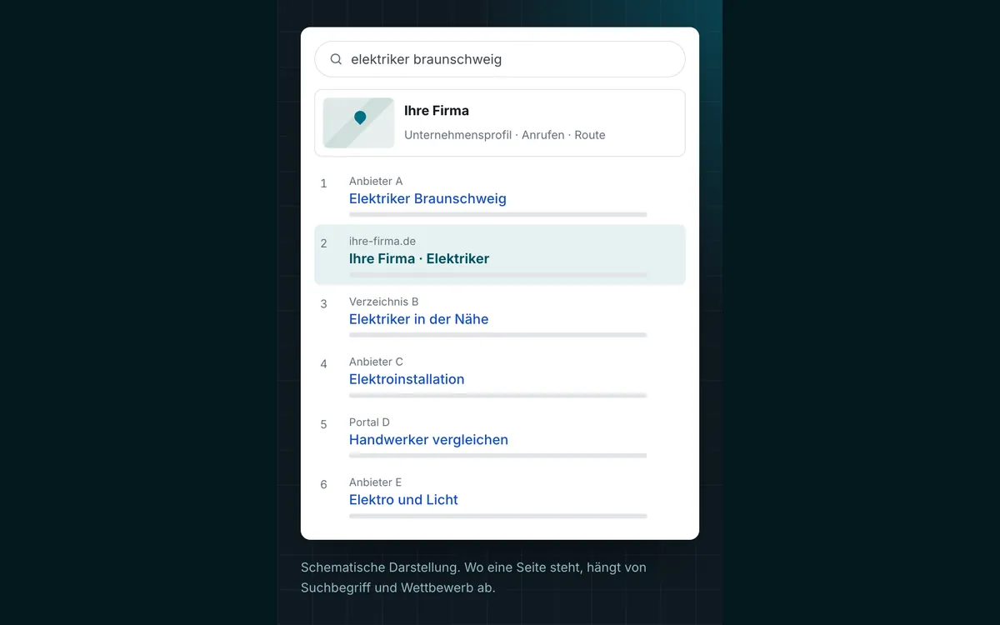

SEO und Local SEO: gefunden werden, wenn Kunden nach Ihrer Leistung suchen.
Wir arbeiten daran, dass Google klar erkennt, was Sie anbieten und wo Sie arbeiten. Mit sauberer Technik, klaren Seiten für Ihre Leistungen und einem gepflegten Google-Unternehmensprofil. Jeden Monat sehen Sie im Bericht, was sich getan hat.
- Monatlich
- Bericht aus der Search Console
- Beteiligung
- am Erfolg, als Option
- 500+
- Unternehmen betreut, seit 2002
Schematische Darstellung. Wo eine Seite steht, hängt von Suchbegriff und Wettbewerb ab.
Was SEO für einen regionalen Betrieb bedeutet
SEO steht für Suchmaschinenoptimierung. Gemeint ist alles, was dazu beiträgt, dass Ihre Website bei Google weit oben erscheint, wenn jemand nach Ihrer Leistung sucht. Für einen regionalen Betrieb zählt vor allem die Suche nach der Leistung zusammen mit dem Ort.
Bei solchen Suchen zeigt Google oft zwei Bereiche: oben eine Karte mit Unternehmensprofilen, darunter die normalen Treffer. Das Ziel ist, in beiden vorzukommen. Dafür muss Google drei Dinge klar erkennen können: was Sie anbieten, wo Sie arbeiten und warum Ihre Seite die Frage des Suchenden gut beantwortet.
Viele Firmen-Websites scheitern nicht am Angebot, sondern an Lücken, die niemand bemerkt. Alle Leistungen stehen auf einer einzigen Seite, der Ort kommt im Text nicht vor, das Unternehmensprofil zeigt alte Öffnungszeiten. Solche Lücken finden und schließen wir. Einen bestimmten Platz sagt niemand seriös zu, auch wir nicht. Sie erfahren aber genau, was wir tun und woran Sie sehen, ob es wirkt.
Was zur Suchmaschinenoptimierung bei uns gehört
Technik prüfen und beheben
Ladezeit auf dem Handy, Indexierung, Weiterleitungen, doppelte Seiten, strukturierte Daten. Wir prüfen, ob Google Ihre Seiten lesen kann, und beheben, was stört.
Eine Seite je Leistung
Wer eine bestimmte Leistung sucht, soll auf einer Seite landen, die genau diese erklärt. Wir planen sie nach den Begriffen, die Ihre Kunden tatsächlich eingeben.
Ortsseiten nur im Einsatzgebiet
Seiten für Leistung und Ort legen wir nur für Orte an, in denen Sie wirklich arbeiten. Jede bekommt eigene Inhalte statt eines ausgetauschten Ortsnamens.
Google-Unternehmensprofil
Kategorien, Leistungen, Öffnungszeiten, Fotos und Beiträge. Wir richten das Profil ein, halten es aktuell und verknüpfen es mit Ihrer Website.
Einheitliche Angaben im Netz
Name, Adresse und Telefonnummer sollen überall gleich lauten: auf der Website, im Profil und in Branchenverzeichnissen. Abweichungen suchen wir und korrigieren sie, wo wir Zugriff haben.
Bericht jeden Monat
Suchbegriffe, Klicks, Anrufe und Routenanfragen aus der Google Search Console und dem Unternehmensprofil. Dazu kurz, was wir getan haben und was als Nächstes kommt.
Local SEO und das Google-Profil
Local SEO ist der Teil der Suchmaschinenoptimierung, der bei Suchen mit Ortsbezug zählt. Vieles davon spielt sich nicht auf Ihrer Website ab, sondern im Google-Unternehmensprofil, das früher Google My Business hieß.
Für die Reihenfolge auf der Karte nennt Google selbst drei Faktoren: Relevanz, Entfernung und Bekanntheit. Die Entfernung zum Suchenden können Sie nicht beeinflussen, die beiden anderen schon. Ein vollständiges Profil mit passenden Kategorien, echten Fotos, aktuellen Leistungen und beantworteten Bewertungen zeigt Google, dass es Ihren Betrieb gibt und was er macht.
Zur Google-My-Business-Optimierung gehört bei uns auch der Umgang mit Bewertungen. Wir kaufen keine und schreiben keine. Wir zeigen Ihnen, wie Sie zufriedene Kunden nach dem Auftrag um eine Bewertung bitten, und formulieren auf Wunsch die Antworten.

Festpreis und Erfolgsbeteiligung als Option
Sie entscheiden, wie wir zusammenarbeiten. In jedem Fall bekommen Sie vorher ein schriftliches Angebot.
Einrichtung
Der Grundstein, einmalig umgesetzt.
- Bestandsaufnahme von Website, Profil und Suchbegriffen
- Technische Fehler beheben
- Seitenplan für Leistungen und Orte
- Search Console und Unternehmensprofil einrichten
Festpreis nach dem Erstgespräch
Laufende Betreuung
Damit es nicht beim Start bleibt.
- Neue und überarbeitete Seiten
- Profil pflegen, Beiträge und Fotos
- Angaben in Verzeichnissen prüfen
- Monatlicher Bericht mit Ausblick
Monatlicher Festpreis nach dem Erstgespräch
Option Erfolgsbeteiligung
Für Betriebe, bei denen sich Aufträge aus der Suche gut zuordnen lassen.
- Beteiligung an Aufträgen aus der Suche
- Zählweise der Anfragen vorab festgelegt
- Monatsbericht als gemeinsame Grundlage
- Ob es passt, klären wir offen
Konditionen im Erstgespräch
So läuft SEO bei uns ab
Sie wissen in jedem Schritt, woran wir arbeiten und warum.
Erstgespräch
Welche Leistungen bringen Ihnen Aufträge, wo arbeiten Sie, wer sind Ihre Kunden? Das Gespräch führen wir in der Region gern in Ihrem Betrieb, sonst per Video.
Bestandsaufnahme
Wir prüfen Website, Profil, Search Console und die Treffer zu Ihren wichtigsten Suchbegriffen. Danach bekommen Sie Plan und Festpreis schriftlich.
Umsetzung
Erst die Technik, dann Profil und Seiten. Jeden neuen Text legen wir Ihnen vor, bevor er online geht.
Bericht und Nachsteuern
Einmal im Monat sehen Sie die Zahlen aus Search Console und Profil. Was nicht wirkt, ändern wir.
SEO für Firmen in Wolfsburg und der Region
Wer in Wolfsburg oder Umgebung eine SEO-Agentur sucht, möchte oft jemanden aus der Region, der auch vorbeikommt. Wir sind keine klassische Werbeagentur, sondern seit 2002 ein IT-Systemhaus mit Sitz in Lehre. Nach Wolfsburg und Königslutter sind es von uns aus etwa 20 Minuten. Wolfenbüttel, Gifhorn und Helmstedt liegen etwa 30 Minuten entfernt, Peine und Salzgitter etwa 35. Für Betriebe in Braunschweig gibt es eine eigene Seite: SEO Agentur Braunschweig.
Viele Unternehmen zwischen Braunschweig und Wolfsburg arbeiten für die Automobilindustrie. Nach solchen Firmen sucht selten ein Privatkunde, sondern ein Einkäufer, etwa nach einem Verfahren, einem Werkstoff oder freier Kapazität. Auch für solche Suchen lässt sich eine Website gezielt aufbauen. Mehr dazu unter Automotive-Zulieferer.
Als IT-Systemhaus haben wir bisher mehr als 500 Unternehmen betreut, meist mit 10 bis 250 Mitarbeitenden. Mehr als die Hälfte unserer Kunden arbeitet seit über fünf Jahren mit uns. Betriebe außerhalb der Region betreuen wir per Video und Telefon.
Häufige Fragen zu SEO
Was kostet SEO bei STKom?
Das hängt davon ab, wie viel an Ihrer Website zu tun ist und für wie viele Leistungen und Orte Sie gefunden werden möchten. Die Einrichtung bieten wir nach dem Erstgespräch zum Festpreis an, die laufende Betreuung zu einem monatlichen Festpreis. Auf Wunsch ist auch eine Erfolgsbeteiligung möglich. Wie sie mit den Festpreisen zusammenhängt, klären wir im Erstgespräch.
Können Sie einen Platz auf der ersten Seite versprechen?
Nein. Die Reihenfolge der Treffer legt allein Google fest, und sie hängt auch davon ab, was Ihre Mitbewerber tun. Was wir zusagen: saubere Arbeit, verständliche Berichte und dass wir nachsteuern, wenn etwas nicht wirkt.
Wie lange dauert es, bis SEO wirkt?
Auf den Monat genau lässt sich das nicht sagen. Es hängt vom Wettbewerb bei Ihren Suchbegriffen ab, vom Zustand der Website und davon, wie oft Google sie besucht. Im monatlichen Bericht sehen Sie, ob und wo sich etwas bewegt.
Was ist der Unterschied zwischen SEO und Google Ads?
Bei Google Ads bezahlen Sie je Klick, und die Anzeigen erscheinen nur, solange Budget da ist. SEO zielt auf die normalen Treffer, für die kein Klickpreis anfällt. Bei unserer Google-Ads-Betreuung zahlen Sie das Werbebudget direkt an Google, und statt einer Monatsgebühr werden wir an den Aufträgen beteiligt, die über die Anzeigen kommen.
Brauche ich dafür eine neue Website?
Nicht unbedingt. Wir prüfen zuerst, ob sich Ihre bestehende Seite gut genug verbessern lässt. Ist die Technik zu alt oder lässt sich die Seite kaum ändern, sagen wir das offen. Dann ist ein Relaunch oft sinnvoller als viele einzelne Reparaturen.
Wie funktioniert die Erfolgsbeteiligung bei SEO?
Bei dieser Option verdienen wir an den Aufträgen mit, die über die Suche zu Ihnen kommen. Dafür legen wir vorab fest, wie Anfragen aus der Suche gezählt werden. Ob das Modell zu Ihrem Betrieb passt und zu welchen Konditionen, besprechen wir im Erstgespräch.
Passt oft dazu
Wie gut werden Sie bei Google gefunden? Schreiben Sie uns.
Nennen Sie uns Ihre Website und die Leistungen, für die Sie gefunden werden möchten. Wir melden uns zu unseren Geschäftszeiten und sagen Ihnen, wo wir ansetzen würden.
- Telefon, Mo–Do 8:30–17:00 Uhr, Fr 8:30–15:30 Uhr05308 935030
- E-Mailinfo@stkom.de
- AdresseBerliner Straße 60, 38165 Lehre